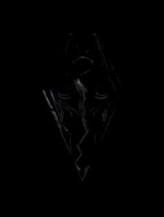
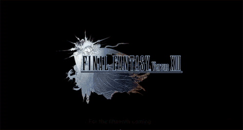
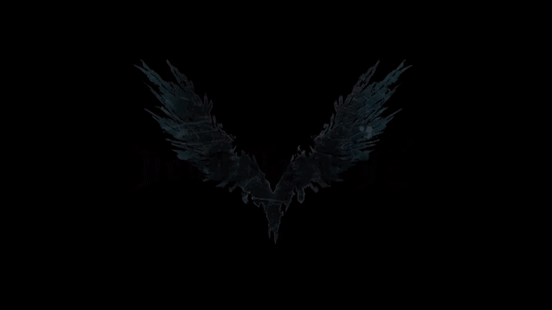
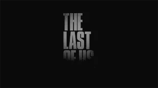
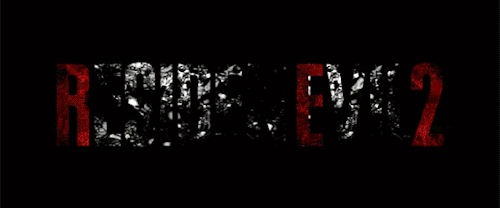
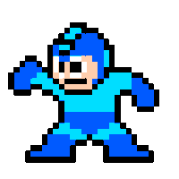
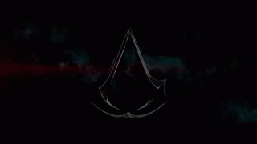

The Elder Scrolls V : Skyrim es un RPG del tipo mundo abierto desarrollado por Bethesda Game Studios. Salió a la venta
el 11 de noviembre del 2011.
La historia de Skyrim se centra en los esfuerzos del personaje, dovahkiin, para derrotar a Alduin, un dragón que, según la profecía, destruirá el mundo.
La historia de Skyrim se centra en los esfuerzos del personaje, dovahkiin, para derrotar a Alduin, un dragón que, según la profecía, destruirá el mundo.

Final Fantasy XV es un videojuego del género ARPG desarrollado por Square Enix. El juego se estrenó
el 29 de noviembre de 2016.
En la noche de la firma de un tratado de paz entre los reinos de Lucis y Niflheiml, el emperador de Niflheim utiliza el tratado como una excusa para derribar la barrera mágica de la capital de Lucis y toma el control de la ciudad. Noctis y sus compañeros se enfrentan a diferentes retos para descubrir la verdad y recuperar el trono.
En la noche de la firma de un tratado de paz entre los reinos de Lucis y Niflheiml, el emperador de Niflheim utiliza el tratado como una excusa para derribar la barrera mágica de la capital de Lucis y toma el control de la ciudad. Noctis y sus compañeros se enfrentan a diferentes retos para descubrir la verdad y recuperar el trono.
    